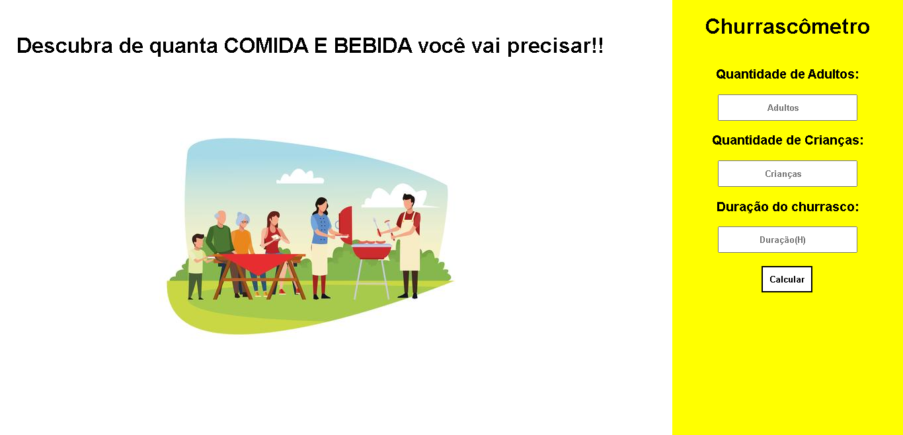
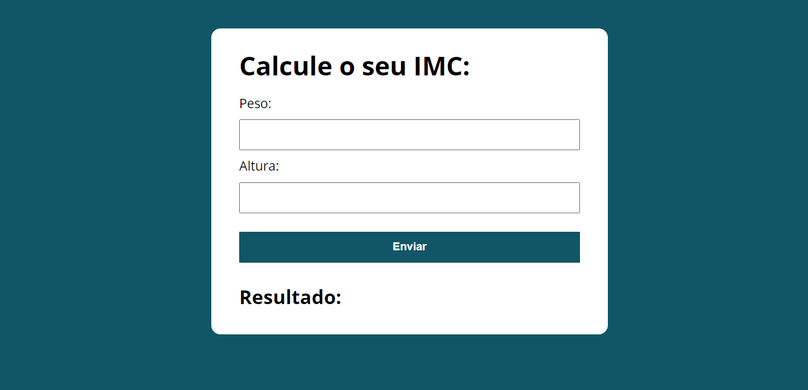

Olá, eu sou a
Isis Beatriz de Alencastro
UI/UX designer e Front-End Developer

SOBRE MIM
Olá, eu sou a Isis, desenvolvedora Front-End. Faço sites modernos, 100% responsivos usando HTML, CSS e JS. A paixão por tecnologia sempre esteve presente em mim, e quando dei início ao estudo de programação, percebi que meu objetivo, movido pelo interesse, seria progredir nessa área.
Nome: Isis Beatriz de Alencastro
Nascimento: 04 de Março de 2006
Localização: Porto Alegre, RS
E-mail: alencastroisis@gmail.com
Telefone: +5551985642435
Habilidades
Serviços
Como eu posso te ajudar?
Saiba quais serviços eu tenho para oferecer.
Ui/Ux design
Prototipação completa e responsiva do seu site de forma 100% focada na experiência do usuário usando a ferramenta FIGMA.
Front-End Developer
Criação completa do seu site em sistemas 100% responisvos usando as técnologias mais atualizadas do mercado!
Manutenção de PC's
Manutenção, Limpeza, Montagem e Instalação de sistemas operacionais
(Windows e Linux).
Portfólio
Conheça alguns dos meus projetos já realizados!

Churrascômetro
O projeto churrascometro é uma calculadora para o seu churrasco. Tem o intuito de previnir gastos desnecessários no seu momento de lazer.
ver projeto

Calculadora de IMC
Esse projeto se trata de uma calculadora de IMC feita para cuidar do seu peso.
ver projeto
.
Landing Page
Landing page feita com html e css, 100% funcional e responsiva para empresas de qualquer nicho.
ver projeto